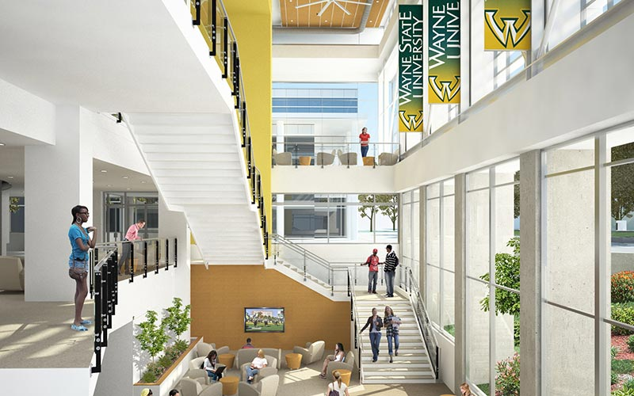
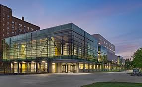
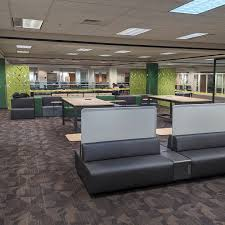
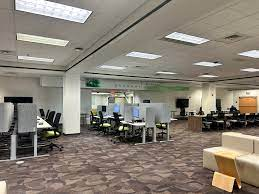
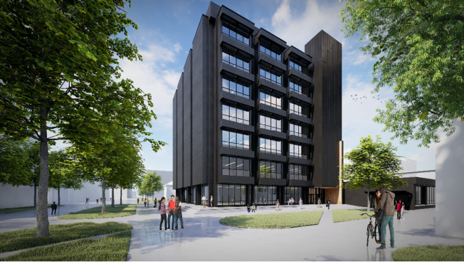
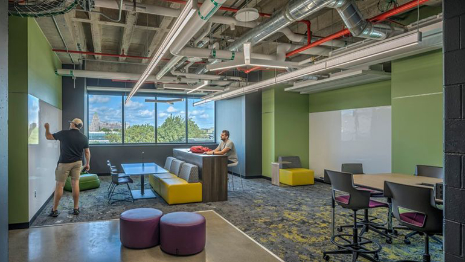

STARS ALIGN
The right study location can significantly impact your focus, productivity, and overall learning experience.
A quiet and well-lit environment, such as a library or a dedicated study room, helps minimize distractions and fosters concentration.
Alternatively, some people thrive in more dynamic spaces, like cafes or co-working areas, where a bit of background noise can enhance creativity.
Having a designated study area also promotes a mental association between the space and learning, improving the ability to focus.
Experimenting with different environments can help you find the ideal setting to boost your motivation and retain information more effectively.



The student center, a area to go that's filled with people. If being in a louder area is more comfortable to study and relax the student
center is the top choice. As its often busy and many people are there throughout the day but an amazing place with various study spots on different floors
with different settings. 8/10 rating.


The ugl (under graduate library) is a really good space that is very quiet all three floors have pretty good access with lots of table good for
group activites. TVs and office spaces could be reserved and there are many hubs for extra help if needed like the writing center.9/10 rating.


Even if you’re not enrolled in a science major or taking any science-related classes, the building is still open and accessible to students, providing a great space to relax or study.
The lobby and first floor, in particular, are quite spacious and welcoming, making them perfect for a break between classes or to get some work done. The area is equipped with several whiteboards.
While it can be a bit busy at times, the atmosphere is generally conducive to getting things done.
Overall, I would rate the space a 7/10 for its accessibility, comfort, and functionality, though the level of activity can sometimes make it feel a little crowded.